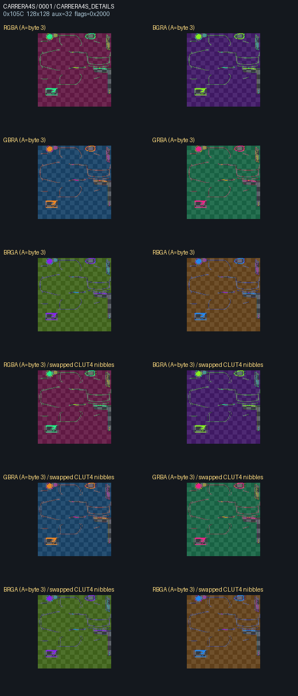
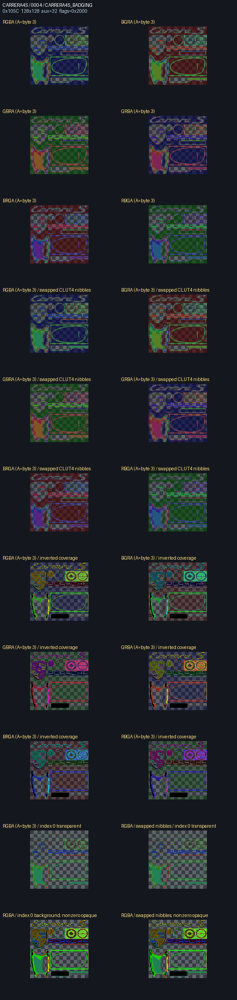

PSP SHPM CLUT byte-order diagnosis
Each sheet decodes the same raw palette with every RGB order while preserving byte 3 as alpha. CLUT4 sheets also test reversed index nibbles. Badges with the anomalous aux=32 mask profile test inverted alpha coverage transparent palette index 0, and binary index coverage. Inspect against a PSP capture before changing the decoder.
CARRERA4S

CARRERA4S_BRAKELIGHT — alpha scores {'byte_0': 0.0121, 'byte_1': 0.1551, 'byte_2': 0.1566, 'byte_3': 1.0}

CARRERA4S_DETAILS — alpha scores {'byte_0': 0.0875, 'byte_1': 0.3812, 'byte_2': 0.175, 'byte_3': 0.275}

CARRERA4S_HEADLIGHT — alpha scores {'byte_0': 0.15, 'byte_1': 0.4562, 'byte_2': 0.15, 'byte_3': 0.5875}

CARRERA4S_HEADLIGHT_Line — alpha scores {'byte_0': 0.5633, 'byte_1': 0.5633, 'byte_2': 0.5633, 'byte_3': 0.5965}

CARRERA4S_BADGING — alpha scores {'byte_0': 0.1312, 'byte_1': 0.2562, 'byte_2': 0.2188, 'byte_3': 0.2562}